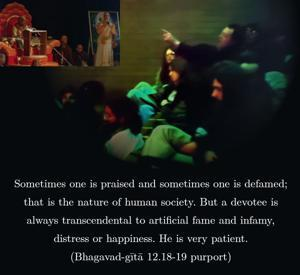
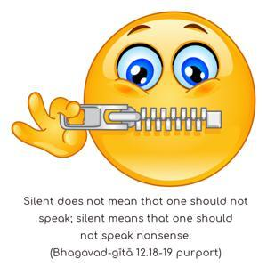
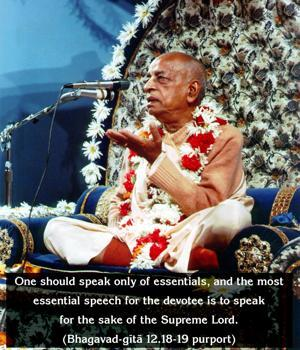
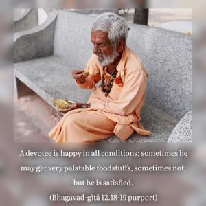

One who is equal to friends and enemies, who is equipoised in honor and dishonor, heat and cold, happiness and distress, fame and infamy, who is always free from contaminating association, always silent and satisfied with anything, who doesn’t care for any residence, who is fixed in knowledge and who is engaged in devotional service – such a person is very dear to Me.




A devotee is always free from all bad association. Sometimes one is praised and sometimes one is defamed; that is the nature of human society. But a devotee is always transcendental to artificial fame and infamy, distress or happiness. He is very patient. He does not speak of anything but the topics about Kṛṣṇa; therefore he is called silent. Silent does not mean that one should not speak; silent means that one should not speak nonsense. One should speak only of essentials, and the most essential speech for the devotee is to speak for the sake of the Supreme Lord. A devotee is happy in all conditions; sometimes he may get very palatable foodstuffs, sometimes not, but he is satisfied. Nor does he care for any residential facility. He may sometimes live underneath a tree, and he may sometimes live in a very palatial building; he is attracted to neither. He is called fixed because he is fixed in his determination and knowledge. We may find some repetition in the descriptions of the qualifications of a devotee, but this is just to emphasize the fact that a devotee must acquire all these qualifications. Without good qualifications, one cannot be a pure devotee. Harāv abhaktasya kuto mahad-guṇāḥ: one who is not a devotee has no good qualification. One who wants to be recognized as a devotee should develop the good qualifications. Of course he does not extraneously endeavor to acquire these qualifications, but engagement in Kṛṣṇa consciousness and devotional service automatically helps him develop them.